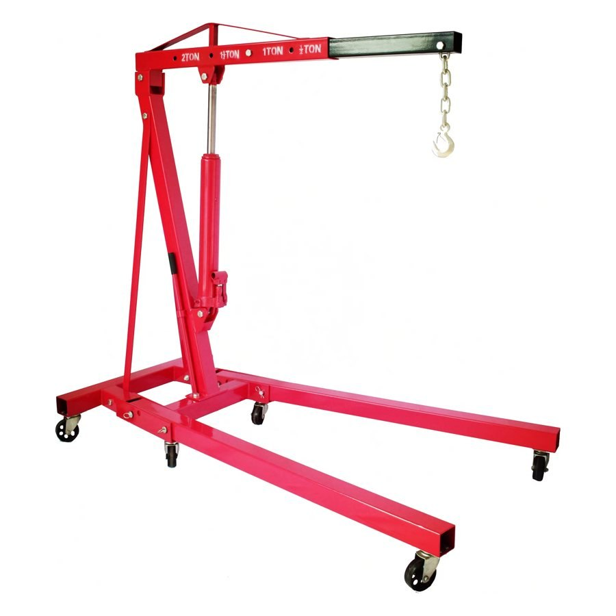

Cold-water high-pressure cleaner 200 bar, 400 V three-phase
Mobile cold-water high-pressure cleaner for vehicles, machines and yard in continuous use.
Professional users in Germany expect a slow-running four-pole three-phase motor, an axial piston pump with brass head, a bypass and safety valve, total stop and a robust frame with wheels and hose holder. Mandatory are CE conformity (low-voltage, EMC and machinery law) with testing to EN 60335-2-79, sound power marking under 2000/14/EC and a German operating manual; liquid jet machines must be inspected by a competent person at least once a year under DGUV Regel 100-500 chapter 2.36. Washing is only permitted on a paved wash area with wastewater treatment (WHG, AbwV), and spare parts such as seal kits, valves and high-pressure hoses should remain available long term.
Technical data
| Working pressure | 200 bar |
|---|---|
| Flow rate | approx.; 15 l/min, approx.; 900 l/h |
| Motor | Three-phase 400 V / 50 Hz, 4-pole, approx.; 1.450 rpm |
| Motor power | approx.; 5,5–7,5 kW |
| Water temperature | Cold water (unheated), inlet max.; approx.; 40 °C |
| High-pressure hose | approx.; 13 m |
| Pump | Axial piston pump with brass head, bypass and safety valve |
| Motor protection rating | min.; IP55 |
| Customs tariff number (HS) | 84243090 |
EU standards and regulations
2006/42/EGMachinery Directive(EU) 2023/1230Machinery Regulation, applies from 20 Jan 20272014/35/EULow Voltage Directive2014/30/EUEMC DirectiveEN 60335-2-79 (VDE 0700-79)Safety of high-pressure cleaners and steam cleaners2000/14/EGNoise emission of outdoor equipment, sound power markingDGUV Regel 100-500 Kap. 2.36Working with liquid jet machines, inspection by competent persons
More products in this category


